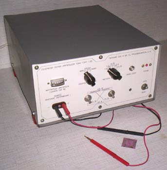
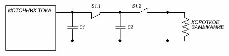
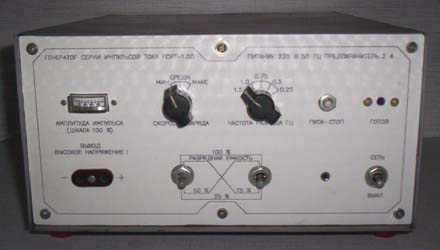

Генератор серии однополярных импульсов тока с
нарастающей амплитудой для
ликвидации паразитных замыканий в многослойных печатных платах и микросборках

Назначение
Генератор позволяет получать серию однополярных импульсов тока с нарастающей амплитудой в нагрузке с близким к нулю сопротивлением и предназначен для расплавления или сжигания импульсами электрического тока дефектных токопроводящих перемычек, создающих короткие замыкания между печатными проводниками многослойных печатных плат или микросборок. Во избежание разрушения платы энергия импульсов в серии плавно нарастает от близкого к нулю значения до величины, требуемой для ликвидации короткого замыкания.
Технические данные
Принцип работы и конструкция
Принцип действия генератора основан на периодическом заряде разрядного конденсатора от накопительного конденсатора и его последующем разряде в нагрузку. Напряжение на накопительном конденсаторе при этом постепенно увеличивается, таким образом, амплитуда импульсов тока в нагрузке соответственно возрастает. Блок-схема генератора представлена на рис. 1.

Рис. 1. Блок-схема генератора серии однополярных импульсов тока с нарастающей амплитудой.
Накопительный конденсатор C1 заряжается от источника тока, напряжение на конденсаторе постепенно возрастает. При замыкании ключа S1.1 часть заряда переходит на разрядный конденсатор C2. Далее ключ S1.1 размыкается, а ключ S1.2 замыкается, и импульс тока через внешние контакты печатных проводников платы подается в перемычку, создающую короткое замыкание. Процесс заряда-разряда конденсатора возрастающим напряжением C2 повторяется до тех пор, пока короткое замыкание не будет ликвидировано. Так как напряжение заряда конденсатора возрастает, то возрастает и амплитуда импульсов тока в серии. Для управления электронными ключами используется специальный контроллер (на рисунке не показан) с задающим генератором [1].
Генератор выполнен в виде переносного прибора. Несущим элементом конструкции является основание, на котором смонтированы все узлы генератора. К основанию крепятся передняя и задняя панели, на которых расположены органы управления и подключения. Сверху генератор закрывается кожухом, который крепится четырьмя винтами к основанию. Внешний вид генератора показан на рис. 2.

Рис. 2. Генератор серии однополярных импульсов тока с нарастающей амплитудой: вид спереди.
Ссылки:
01.12.2010
Альтернативные источники
энергии
Компьютеры и
Интернет
Магнитные поля
Механотронные системы
Перспективные
разработки
Электроника и технология